BLACKHAWKS
| Photo |
Name |
Number |
Position |
Shot |
Height |
Weight |
Birthday |
Hometown |
| 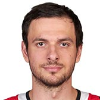 |
Artem Anisimov |
15 |
C |
L |
6' 4" |
198 |
May 24, 1988 |
Yaroslavl, RUS |
| 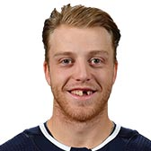 |
Drake Caggiula |
91 |
C |
L |
5' 10" |
176 |
Jun 20, 1994 |
Pickering, ON, CAN |
| 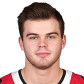 |
Alex DeBrincat |
12 |
RW |
R |
5' 7" |
165 |
Dec 18, 1997 |
Farmington Hills, MI, USA |
| 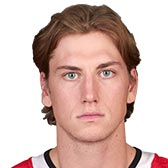 |
John Hayden |
40 |
RW |
R |
6' 3" |
215 |
Feb 14, 1995 |
Chicago, IL, USA |
| 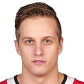 |
Dominik Kahun |
24 |
C |
L |
5' 11" |
175 |
Jul 2, 1995 |
Plana, CZE |
| 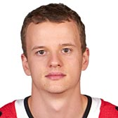 |
David Kampf |
64 |
C |
L |
6' 2" |
188 |
Jan 12, 1995 |
Chomutov, CZE |
| 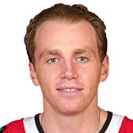 |
Patrick Kane |
88 |
RW |
L |
5' 10" |
177 |
Nov 19, 1988 |
Buffalo, NY, USA |
| 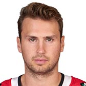 |
Marcus Kruger |
16 |
C |
L |
6' 0" |
186 |
May 27, 1990 |
Stockholm, SWE |
| 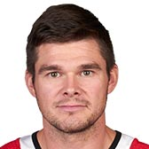 |
Chris Kunitz |
14 |
LW |
L |
6' 0" |
188 |
Sep 26, 1979 |
Regina, SK, CAN |
|
Brendan Perlini |
11 |
LW |
L |
6' 3" |
211 |
Apr 27, 1996 |
Regina, SK, CAN |
| 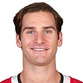 |
Brandon Saad |
20 |
LW |
L |
6' 1" |
206 |
Oct 27, 1992 |
Pittsburgh, PA, USA |
| 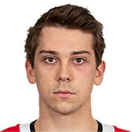 |
Dylan Strome |
17 |
C |
L |
6' 3" |
200 |
Mar 07, 1997 |
Mississauga, ON, CAN |
|
Jonathan Toews |
19 |
C |
L |
6' 2" |
201 |
Apr 29, 1988 |
Winnipeg, MB, CAN |
| Photo |
Name |
Number |
Shot |
Height |
Weight |
Birthday |
Hometown |
| 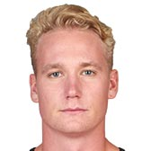 |
Carl Dahlstrom |
63 |
L |
6' 4" |
231 |
Jan 28, 1995 |
Stockholm, SWE |
|
Gustav Forsling |
42 |
L |
6' 0" |
197 |
Jun 12, 1996 |
Hull, QC, CAN |
| 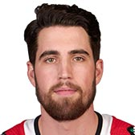 |
Erik Gustafsson |
56 |
L |
6' 0" |
197 |
Mar 14, 1992 |
Nynashamn, SWE |
| 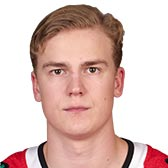 |
Henri Jokiharju |
28 |
R |
6' 0" |
193 |
Jun 17, 1999 |
Oulu, FIN |
| 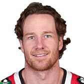 |
Duncan Keith |
2 |
L |
6' 1" |
192 |
Jul 16, 1983 |
Winnipeg, MB, CAN |
| 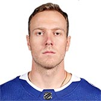 |
Slater Koekkoek |
68 |
L |
6' 2" |
193 |
Feb 18, 1994 |
Winchester, ON, CAN |
| 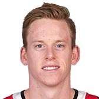 |
Connor Murphy |
5 |
R |
6' 4" |
212 |
Mar 26, 1993 |
Dublin, OH, USA |
|
Brent Seabrook |
7 |
R |
6' 3" |
220 |
Apr 20, 1985 |
Richmond, BC, CAN |
| Photo |
Name |
Number |
Height |
Weight |
Birthday |
Hometown |
|
Corey Crawford |
50 |
6' 2" |
216 |
Dec 31, 1984 |
Montreal, QC, CAN |
| 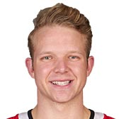 |
Collin Delia |
60 |
6' 2" |
208 |
Jun 20, 1994 |
Montreal, QC, CAN |
| 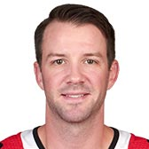 |
Cam Ward |
30 |
6' 1" |
194 |
Feb 29, 1984 |
Saskatoon, SK, CAN |